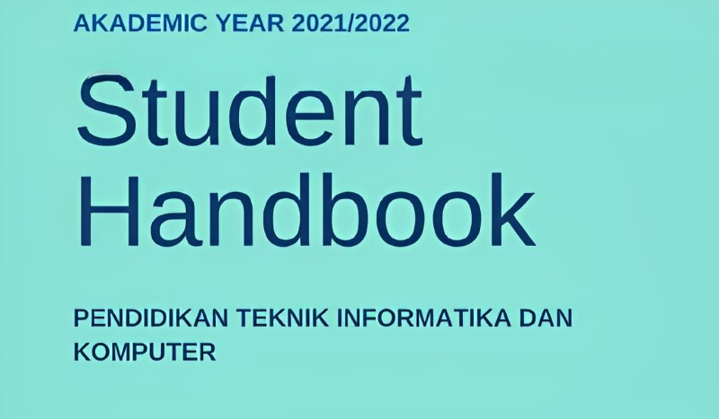

The academic handbook contains general information about the Informatics Education Study Program (a.k.a. Program Studi Pendidika Teknik Informatika dan Komputer). Its vision, mission, and objectives. The Program Learning Outcomes and how units are structured to facilitate the achievement. All supporting infrastructure and staff are elaborated in brief to ascertain the students oriented institution. It also shed light on the pathways in the Informatics Education field for students to take courses.The curriculum reflects our effort to keep up teaching and learning material with the rapid technology growth, while maintaining pedagogy and instructional requirements to the highest quality. The curriculum development involves practitioners, educational experts, and graduates' users from Industry and schools alike to obtain industry insight that is embedded into the curriculum.
